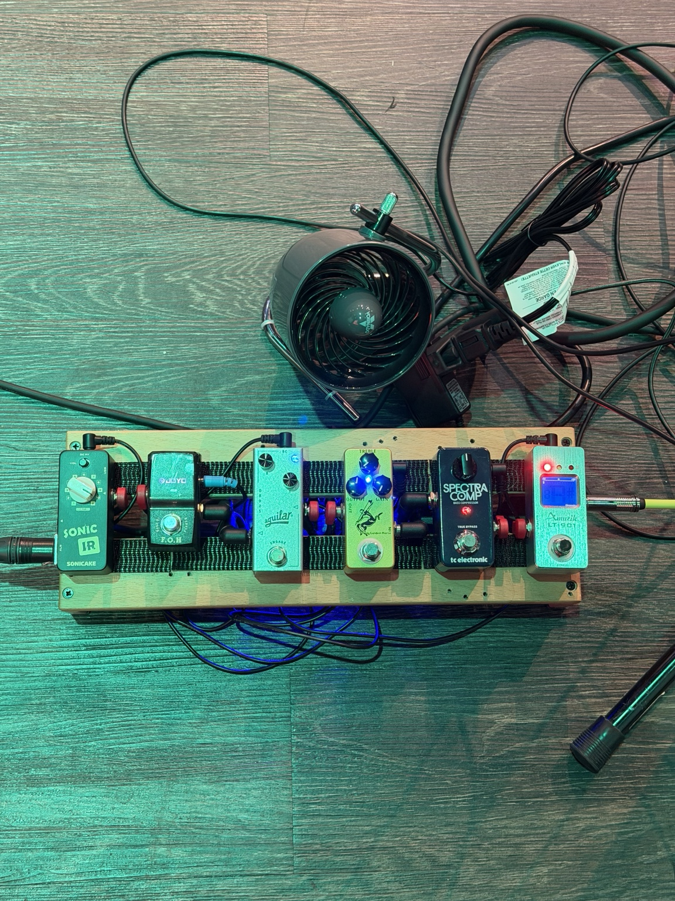
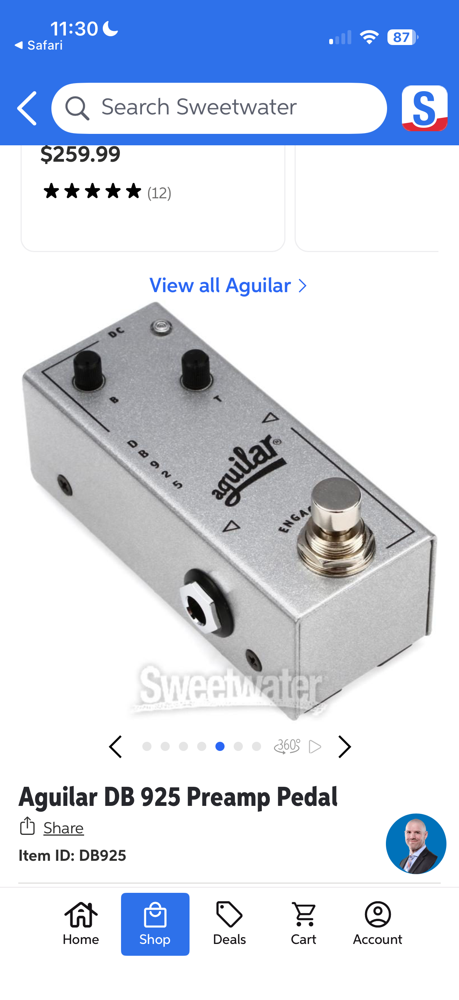
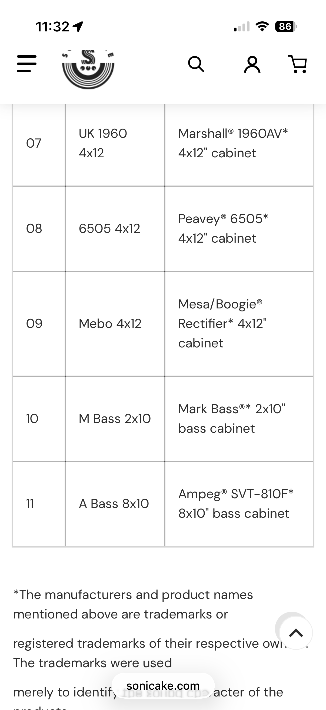
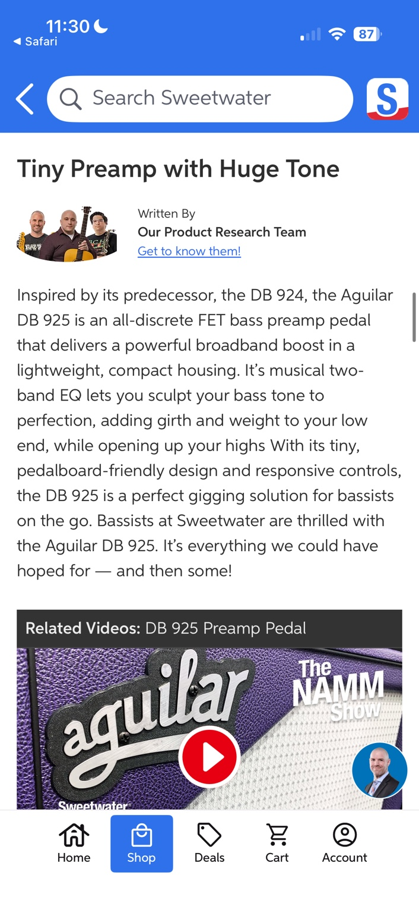

The goal: buttery, present, and not fake-SVT huge.
This board is not trying to be a giant rock rig. It is a controlled, church-friendly direct rig: strong fundamental, smooth compression, a little harmonic sheen, and cabinet character so the bass does not hit the PA like raw DI wire.
Think: passive bass → studio-ish level control → light Klon-style push → Aguilar warmth → FOH tone shaping → Markbass 2x10 / Ampeg 8x10 cab flavor.



Why this order works
Tuner first
The Kmise tuner gets the cleanest possible input and works as a practical mute at the front of the board.
SpectraComp early
Placed early, it catches uneven bass-string dynamics before the preamp and cab stages. Multiband compression keeps the B/E string from swallowing the room while preserving attack on the top strings.
Golden Horse as seasoning, not distortion
The Klon-style circuit is best here as a low-gain sweetener or clean boost. Keep gain low, level up, treble modest. If the low end thins, back off the gain and let the DB 925 restore weight.
Aguilar DB 925 for the “record-ready” push
The DB 925 is the core tone shaper: bass for girth, treble for air, and that broad musical lift that makes a passive bass feel more expensive.
JOYO F.O.H as a tiny DI/preamp utility
The F.O.H gives level, blend/mix, bass and treble control, plus a balanced/unbalanced output path. This is where you can adapt to a room without wrecking the rest of the recipe.
Sonic IR last for cab shape
Last in line, the Sonic IR turns the direct tone into something more speaker-like. Start with cab 10 Mark Bass 2x10 for punch or cab 11 Ampeg 8x10 for bigger, deeper authority.
Pedals and purchases
Amazon links use the affiliate tag xlhuman-20 where possible.

SpectraComp Bass Compressor
One knob, but deep. Multiband compression means the lows, mids, and top end can be controlled differently, keeping the bass present without feeling flattened.
Amazon search
Sonicake Sonic IR
The cabinet-simulator finish line. It has 11 guitar/bass cabinet models, XLR out, USB IR loading, and a dead-simple cab knob.
Amazon search
JOYO F.O.H Bass DI
A tiny direct box / bass tone box with level, mix, bass, treble, and balanced or unbalanced output. Useful when the room, mixer, or PA needs help.
Amazon searchAguilar DB 925
The “make it sound finished” pedal. Simple bass and treble boosts, broad enough to sound musical instead of surgical.
Amazon search
Mosky Golden Horse
Budget Klon flavor. Use as light grit, edge, or clean push. For bass, avoid cranking gain unless you want less low-end body.
Amazon searchSovvid Pedal Power Supply
The hidden infrastructure: isolated-style outputs, enough current for the mini board, and less wall-wart chaos.
Amazon affiliate linkSuggested starting settings
These are safe launch points for a passive 5-string into worship FOH. Fine tune by room and song.
| Pedal | Start here | Why |
|---|---|---|
| SpectraComp | 9–11 o’clock | Control peaks without choking touch. |
| Golden Horse | Gain low, Level slightly up, Treble noon-ish | Harmonics, not guitar overdrive. |
| DB 925 | Bass 10–1, Treble 10–1 | Broad lift: weight plus clean edge. |
| FOH | Level unity, Mix noon, EQ flat-to-small boost | Room correction and output management. |
| Sonic IR | 10 or 11 | Mark Bass 2x10 punch or Ampeg 8x10 heft. |
Fast troubleshooting
Too boomy? Turn Sonic IR to cab 10, reduce DB 925 bass, and ask FOH to high-pass instead of cutting all warmth.
Too invisible? Add a little DB 925 treble, lower SpectraComp if attack is swallowed, and bump FOH level.
Too clanky? Lower Golden Horse treble/gain first, then tame DB 925 treble.
Hum/noise? Test one pedal at a time, avoid daisy-chaining digital/current-hungry pedals, and keep the compressor from amplifying noise too early.
Affiliate disclosure
As an Amazon Associate, I earn from qualifying purchases. Some links on this page use the affiliate tag xlhuman-20. That does not change your price; it may support the gear shelf if you buy through one of the links.